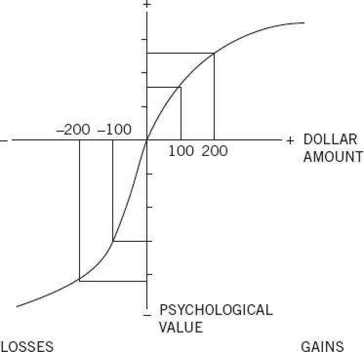

Amos and I stumbled on the central flaw in Bernoulli’s theory by a lucky combination of skill and ignorance. At Amos’s suggestion, I read a chapter in his book that described experiments in which distinguished scholars had measured the utility of money by asking people to make choices about gambles in which the participant could win or lose a few pennies. The experimenters were measuring the utility of wealth, by modifying wealth within a range of less than a dollar. This raised questions. Is it plausible to assume that people evaluate the gambles by tiny differences in wealth? How could one hope to learn about the psychophysics of wealth by studying reactions to gains and losses of pennies? Recent developments in psychophysical theory suggested that if you want to study the subjective value of wealth, you shou Clth"ld ask direct questions about wealth, not about changes of wealth. I did not know enough about utility theory to be blinded by respect for it, and I was puzzled.
When Amos and I met the next day, I reported my difficulties as a vague thought, not as a discovery. I fully expected him to set me straight and to explain why the experiment that had puzzled me made sense after all, but he did nothing of the kind—the relevance of the modern psychophysics was immediately obvious to him. He remembered that the economist Harry Markowitz, who would later earn the Nobel Prize for his work on finance, had proposed a theory in which utilities were attached to changes of wealth rather than to states of wealth. Markowitz’s idea had been around for a quarter of a century and had not attracted much attention, but we quickly concluded that this was the way to go, and that the theory we were planning to develop would define outcomes as gains and losses, not as states of wealth. Knowledge of perception and ignorance about decision theory both contributed to a large step forward in our research.
We soon knew that we had overcome a serious case of theory-induced blindness, because the idea we had rejected now seemed not only false but absurd. We were amused to realize that we were unable to assess our current wealth within tens of thousands of dollars. The idea of deriving attitudes to small changes from the utility of wealth now seemed indefensible. You know you have made a theoretical advance when you can no longer reconstruct why you failed for so long to see the obvious. Still, it took us years to explore the implications of thinking about outcomes as gains and losses.
In utility theory, the utility of a gain is assessed by comparing the utilities of two states of wealth. For example, the utility of getting an extra $500 when your wealth is $1 million is the difference between the utility of $1,000,500 and the utility of $1 million. And if you own the larger amount, the disutility of losing $500 is again the difference between the utilities of the two states of wealth. In this theory, the utilities of gains and losses are allowed to differ only in their sign (+ or –). There is no way to represent the fact that the disutility of losing $500 could be greater than the utility of winning the same amount—though of course it is. As might be expected in a situation of theory-induced blindness, possible differences between gains and losses were neither expected nor studied. The distinction between gains and losses was assumed not to matter, so there was no point in examining it.
Amos and I did not see immediately that our focus on changes of wealth opened the way to an exploration of a new topic. We were mainly concerned with differences between gambles with high or low probability of winning. One day, Amos made the casual suggestion, “How about losses?” and we quickly found that our familiar risk aversion was replaced by risk seeking when we switched our focus. Consider these two problems:
Problem 1: Which do you choose?
Get $900 for sure OR 90% chance to get $1,000
Problem 2: Which do you choose?
Lose $900 for sure OR 90% chance to lose $1,000
You were probably risk averse in problem 1, as is the great majority of people. The subjective value of a gain of $900 is certainly more than 90% of the value of a ga Blth"it ue of a gin of $1,000. The risk-averse choice in this problem would not have surprised Bernoulli.
Now examine your preference in problem 2. If you are like most other people, you chose the gamble in this question. The explanation for this risk-seeking choice is the mirror image of the explanation of risk aversion in problem 1: the (negative) value of losing $900 is much more than 90% of the (negative) value of losing $1,000. The sure loss is very aversive, and this drives you to take the risk. Later, we will see that the evaluations of the probabilities (90% versus 100%) also contributes to both risk aversion in problem 1 and the preference for the gamble in problem 2.
We were not the first to notice that people become risk seeking when all their options are bad, but theory-induced blindness had prevailed. Because the dominant theory did not provide a plausible way to accommodate different attitudes to risk for gains and losses, the fact that the attitudes differed had to be ignored. In contrast, our decision to view outcomes as gains and losses led us to focus precisely on this discrepancy. The observation of contrasting attitudes to risk with favorable and unfavorable prospects soon yielded a significant advance: we found a way to demonstrate the central error in Bernoulli’s model of choice. Have a look:
Problem 3: In addition to whatever you own, you have been given $1,000.
You are now asked to choose one of these options:
50% chance to win $1,000 OR get $500 for sure
Problem 4: In addition to whatever you own, you have been given $2,000.
You are now asked to choose one of these options:
50% chance to lose $1,000 OR lose $500 for sure
You can easily confirm that in terms of final states of wealth—all that matters for Bernoulli’s theory—problems 3 and 4 are identical. In both cases you have a choice between the same two options: you can have the certainty of being richer than you currently are by $1,500, or accept a gamble in which you have equal chances to be richer by $1,000 or by $2,000. In Bernoulli’s theory, therefore, the two problems should elicit similar preferences. Check your intuitions, and you will probably guess what other people did.
The finding of different preferences in problems 3 and 4 was a decisive counterexample to the key idea of Bernoulli’s theory. If the utility of wealth is all that matters, then transparently equivalent statements of the same problem should yield identical choices. The comparison of the problems highlights the all-important role of the reference point from which the options are evaluated. The reference point is higher than current wealth by $1,000 in problem 3, by $2,000 in problem 4. Being richer by $1,500 is therefore a gain of $500 in problem 3 and a loss in problem 4. Obviously, other examples of the same kind are easy to generate. The story of Anthony and Betty had a similar structure.
How much attention did you pay to the gift of $1,000 or $2,000 that you were “given” prior to making your choice? If you are like most people, you barely noticed it. Indeed, there was no reason for you to attend to it, because the gift is included in the reference point, and reference points are generally ignored. You know something about your preferences that utility theorists do not—that your attitudes to risk would not be different if your net worth were higher or lower by a few thousand dollars (unless you are abjectly poor). And you also know that your attitudes to gains and losses are not derived from your evaluation of your wealth. The reason you like the idea of gaining $100 and dislike the idea of losing $100 is not that these amounts change your wealth. You just like winning and dislike losing—and you almost certainly dislike losing more than you like winning.
The four problems highlight the weakness of Bernoulli’s model. His theory is too simple and lacks a moving part. The missing variable is the reference point, the earlier state relative to which gains and losses are evaluated. In Bernoulli’s theory you need to know only the state of wealth to determine its utility, but in prospect theory you also need to know the reference state. Prospect theory is therefore more complex than utility theory. In science complexity is considered a cost, which must be justified by a sufficiently rich set of new and (preferably) interesting predictions of facts that the existing theory cannot explain. This was the challenge we had to meet.
Although Amos and I were not working with the two-systems model of the mind, it’s clear now that there are three cognitive features at the heart of prospect theory. They play an essential role in the evaluation of financial outcomes and are common to many automatic processes of perception, judgment, and emotion. They should be seen as operating characteristics of System 1.
The three principles that govern the value of outcomes are illustrated by figure 1 Blth" wagure 0. If prospect theory had a flag, this image would be drawn on it. The graph shows the psychological value of gains and losses, which are the “carriers” of value in prospect theory (unlike Bernoulli’s model, in which states of wealth are the carriers of value). The graph has two distinct parts, to the right and to the left of a neutral reference point. A salient feature is that it is S-shaped, which represents diminishing sensitivity for both gains and losses. Finally, the two curves of the S are not symmetrical. The slope of the function changes abruptly at the reference point: the response to losses is stronger than the response to corresponding gains. This is loss aversion.

Figure 10
Loss Aversion
Many of the options we face in life are “mixed”: there is a risk of loss and an opportunity for gain, and we must decide whether to accept the gamble or reject it. Investors who evaluate a start-up, lawyers who wonder whether to file a lawsuit, wartime generals who consider an offensive, and politicians who must decide whether to run for office all face the possibilities of victory or defeat. For an elementary example of a mixed prospect, examine your reaction to the next question.
Problem 5: You are offered a gamble on the toss of a coin.
If the coin shows tails, you lose $100.
If the coin shows heads, you win $150.
Is this gamble attractive? Would you accept it?
To make this choice, you must balance the psychological benefit of getting $150 against the psychological cost of losing $100. How do you feel about it? Although the expected value of the gamble is obviously positive, because you stand to gain more than you can lose, you probably dislike it—most people do. The rejection of this gamble is an act of System 2, but the critical inputs are emotional responses that are generated by System 1. For most people, the fear of losing $100 is more intense than the hope of gaining $150. We concluded from many such observations that “losses loom larger than gains” and that people are loss averse.
You can measure the extent of your aversion to losses by asking yourself a question: What is the smallest gain that I need to balance an equal chance to lose $100? For many people the answer is about $200, twice as much as the loss. The “loss aversion ratio” has been estimated in several experiments and is usually in the range of 1.5 to 2.5. This is an average, of course; some people are much more loss averse than others. Professional risk takers in the financial markets are more tolerant of losses, probably because they do not respond emotionally to every fluctuation. When participants in an experiment were instructed to “think like a trader,” they became less loss averse and their emotional reaction to losses (measured by a physiological index of emotional arousal) was sharply reduced.
In order to examine your loss aversion ratio for different stakes, consider the following questions. Ignore any social considerations, do not try to appear either bold Blth"vioher or cautious, and focus only on the subjective impact of the possible loss and the off setting gain.
As you carried out this exercise, you probably found that your loss aversion coefficient tends to increase when the stakes rise, but not dramatically. All bets are off, of course, if the possible loss is potentially ruinous, or if your lifestyle is threatened. The loss aversion coefficient is very large in such cases and may even be infinite—there are risks that you will not accept, regardless of how many millions you might stand to win if you are lucky.
Another look at figure 10 may help prevent a common confusion. In this chapter I have made two claims, which some readers may view as contradictory:
There is no contradiction. In the mixed case, the possible loss looms twice as large as the possible gain, as you can see by comparing the slopes of the value function for losses and gains. In the bad case, the bending of the value curve (diminishing sensitivity) causes risk seeking. The pain of losing $900 is more than 90% of the pain of losing $1,000. These two insights are the essence of prospect theory.
Figure 10 shows an abrupt change in the slope of the value function where gains turn into losses, because there is considerable loss aversion even when the amount at risk is minuscule relative to your wealth. Is it plausible that attitudes to states of wealth could explain the extreme aversion to small risks? It is a striking example of theory-induced blindness that this obvious flaw in Bernoulli’s theory failed to attract scholarly notice for more than 250 years. In 2000, the behavioral economist Matthew Rabin finally proved mathematically that attempts to explain loss aversion by the utility of wealth are absurd and doomed to fail, and his proof attracted attention. Rabin’s theorem shows that anyone who rejects a favorable gamble with small stakes is mathematically committed to a foolish level of risk aversion for some larger gamble. For example, he notes that most Humans reject the following gamble:
50% chance to lose $100 and 50% chance to win $200
He then shows that according to utility theory, an individual who rejects that gamble will also turn down the following gamble:
50% chance to lose $200 and 50% chance to win $20,000
But of course no one in his or her right mind will reject this gamble! In an exuberant article they wrote abo Blth"ins>
Perhaps carried away by their enthusiasm, they concluded their article by recalling the famous Monty Python sketch in which a frustrated customer attempts to return a dead parrot to a pet store. The customer uses a long series of phrases to describe the state of the bird, culminating in “this is an ex-parrot.” Rabin and Thaler went on to say that “it is time for economists to recognize that expected utility is an ex-hypothesis.” Many economists saw this flippant statement as little short of blasphemy. However, the theory-induced blindness of accepting the utility of wealth as an explanation of attitudes to small losses is a legitimate target for humorous comment.
Blind Spots pf Prospect Theory
So far in this part of the book I have extolled the virtues of prospect theory and criticized the rational model and expected utility theory. It is time for some balance.
Most graduate students in economics have heard about prospect theory and loss aversion, but you are unlikely to find these terms in the index of an introductory text in economics. I am sometimes pained by this omission, but in fact it is quite reasonable, because of the central role of rationality in basic economic theory. The standard concepts and results that undergraduates are taught are most easily explained by assuming that Econs do not make foolish mistakes. This assumption is truly necessary, and it would be undermined by introducing the Humans of prospect theory, whose evaluations of outcomes are unreasonably short-sighted.
There are good reasons for keeping prospect theory out of introductory texts. The basic concepts of economics are essential intellectual tools, which are not easy to grasp even with simplified and unrealistic assumptions about the nature of the economic agents who interact in markets. Raising questions about these assumptions even as they are introduced would be confusing, and perhaps demoralizing. It is reasonable to put priority on helping students acquire the basic tools of the discipline. Furthermore, the failure of rationality that is built into prospect theory is often irrelevant to the predictions of economic theory, which work out with great precision in some situations and provide good approximations in many others. In some contexts, however, the difference becomes significant: the Humans described by prospect theory are guided by the immediate emotional impact of gains and losses, not by long-term prospects of wealth and global utility.
I emphasized theory-induced blindness in my discussion of flaws in Bernoulli’s model that remained unquestioned for more than two centuries. But of course theory-induced blindness is not restricted to expected utility theory. Prospect theory has flaws of its own, and theory-induced blindness to these flaws has contributed to its acceptance as the main alternative to utility theory.
Consider the assumption of prospect theory, that the reference point, usually the status quo, has a value of zero. This assumption seems reasonable, but it leads to some absurd consequences. Have a good look at the following prospects. What would it be like to own them?
A. one chance in a million to win $1 million
B. 90% chance to win $12 and 10% chance to win nothing
C. 90% chance to win $1 million and 10% chance to win nothing
Winning nothing is a possible outcome in all three gambles, and prospect theory assigns the same value to that outcome in the three cases. Winning nothing is the reference point and its value is zero. Do these statements correspond to your experience? Of course not. Winning nothing is a nonevent in the first two cases, and assigning it a value of zero makes good sense. In contrast, failing to win in the third scenario is intensely disappointing. Like a salary increase that has been promised informally, the high probability of winning the large sum sets up a tentative new reference point. Relative to your expectations, winning nothing will be experienced as a large loss. Prospect theory cannot cope with this fact, because it does not allow the value of an outcome (in this case, winning nothing) to change when it is highly unlikely, or when the alternative is very valuable. In simple words, prospect theory cannot deal with disappointment. Disappointment and the anticipation of disappointment are real, however, and the failure to acknowledge them is as obvious a flow as the counterexamples that I invoked to criticize Bernoulli’s theory.
Prospect theory and utility theory also fail to allow for regret. The two theories share the assumption that available options in a choice are evaluated separately and independently, and that the option with the highest value is selected. This assumption is certainly wrong, as the following example shows.
Problem 6: Choose between 90% chance to win $1 million OR $50 with certainty.
Problem 7: Choose between 90% chance to win $1 million OR $150,000 with certainty.
Compare the anticipated pain of choosing the gamble and not winning in the two cases. Failing to win is a disappointment in both, but the potential pain is compounded in problem 7 by knowing that if you choose the gamble and lose you will regret the “greedy” decision you made by spurning a sure gift of $150,000. In regret, the experience of an outcome depends on an option you could have adopted but did not.
Several economists and psychologists have proposed models of decision making that are based on the emotions of regret and disappointment. It is fair to say that these models have had less influence than prospect theory, and the reason is instructive. The emotions of regret and disappointment are real, and decision makers surely anticipate these emotions when making their choices. The problem is that regret theories make few striking predictions that would distinguish them from prospect theory, which has the advantage of being simpler. The complexity of prospect theory was more acceptable in the competition with expected utility theory because it did predict observations that expected utility theory could not explain.
Richer and more realistic assumptions do not suffice to make a theory successful. Scientists use theories as a bag of working tools, and they will not take on the burden of a heavier bag unless the new tools are very useful. Prospect theory was accepted by many scholars not because it is “true” but because the concepts that it added to utility theory, notably the reference point and loss aversion, were worth the trouble; they yielded new predictions that turned out to be true. We were lucky.
Speaking of Prospect Theory
“He suffers from extreme loss aversion, which makes him turn down very favorable opportunities.”
“Considering her vast wealth, her emotional response to trivial gains and losses makes no sense.”
“He weighs losses about twice as much as gains, which is normal.”
P